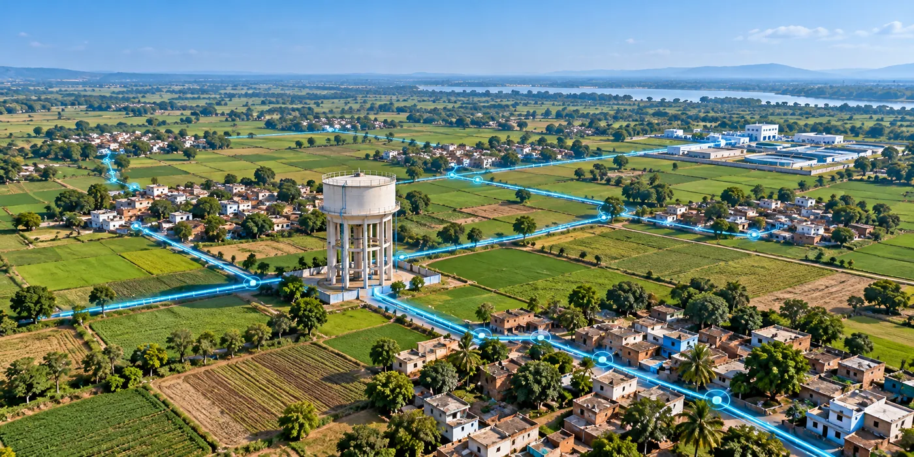

The Assignment
The State Water & Sanitation Mission required Detailed Project Reports (DPRs) for rural water supply schemes across the Jhansi and Mirzapur districts of Uttar Pradesh.
The assignment involved planning sustainable water supply infrastructure to serve a large rural population across the Bundelkhand and Vindhya regions, while addressing engineering, hydraulic design, infrastructure planning and project investment requirements.
Our Approach
CS TECH Ai prepared 159 Detailed Project Reports covering rural water supply schemes across Jhansi and Mirzapur districts.
The engagement included:
- Engineering surveys and infrastructure planning
- Preparation of Detailed Project Reports (DPRs)
- Hydraulic design for rural water supply systems
- Water Treatment Plant (WTP) planning
- Transmission and distribution network planning
- Service reservoir planning
- Project estimates and engineering documentation
- Implementation planning across both districts
The DPRs provided the engineering and planning framework required for developing large-scale rural drinking-water infrastructure across the project area.
Technology & Delivery
The assignment combined engineering surveys, hydraulic design, water-treatment planning and network design within an integrated DPR-development process.
The planned infrastructure included 19 Water Treatment Plants with a combined capacity of 508 MLD, 1,800 km of transmission network, 11,500 km of distribution system and 455 service reservoirs.